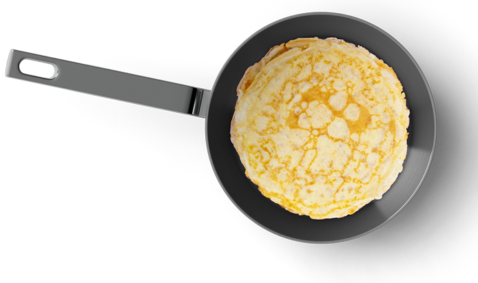

Pannekoeken
Een pannenkoek is een gerecht dat wordt gemaakt van bloem, ei en melk en een klein beetje zout en in een koekenpan met verhitte
vetstof wordt gebakken. Hoewel tegenwoordig veelal bloem wordt gebruikt, werd een pannenkoek oorspronkelijk van half
boekweitmeel en half bloem gebakken. Sommigen maken een kunst van het omdraaien van een pannenkoek en werpen de pannenkoek vanuit
de pan omhoog om hem weer omgedraaid in de pan terug te vangen. Pannenkoeken worden vaak opgerold of opgeplooid gegeten met
zoete of hartige vulling. Men kan ze zowel warm als koud eten.
Nederlandse pannekoek
De Nederlandse pannenkoek wordt vrij dik gebakken, in de andere landen doen ze dat weer anders!
De crepe uit Frankrijk wordt zeer dun gebakken en meestal uitgestreken over een hete plaat.
Amerika kent een tegenovergestelde traditie wat betreft de pancake, deze pannenkoek wordt met rijsmiddel bereid en vrij dik gebakken.
Ingredienten
 250 gram bloem
2 eieren
500 ml melk
Boter
1 theelepel zout
250 gram bloem
2 eieren
500 ml melk
Boter
1 theelepel zout
Bereidingswijzen
- Voeg het zout, de eieren, de helft van de melk en de bloem in een grote kom.
- Klop het beslag tot het glad wordt of gebruik hiervoor een mixer.
- Is het beslag glad? Voeg dan de overige helft van de melk aan het beslag toe en zorg wederom dat het beslag glad wordt.
- Laat het beslag ongeveer 30 minuten zo staan. De luchtbellen kunnen op deze manier uit het beslag verdwijnen en het beslag
kan een klein beetje opwarmen.
- Dek de kom met beslag af met een laagje plastic folie.
- Nu is het tijd om de pannenkoek te bakken! Maak de pan goed heet en stop een klein beetje boter in de pan. Laat de boter rustig bruisen en wacht tot het helemaal vloeibaar is.
- Gebruik een grote lepel en breng een dun laagje beslag in de pan. Draai de pan rustig rond en zorg dat de gehele bodem van de pan met beslag is bedekt.
- De pannenkoek mag vanaf dit moment een aantal minuten bakken, wacht tot de bovenkant helemaal droog is.
- Kijk nu rustig om het hoekje om te zien of de onderkant van de pannenkoek al bruin wordt.
- Keer de pannenkoek in 1 keer om en gaar nu de andere kant voor een iets kortere tijd. De pannenkoek zal nu ook aan de andere kant iets bruiner worden.
